Alation Connected Sheets¶
Alation Cloud Service Applies to Alation Cloud Service instances of Alation
Alation Connected Sheets brings spreadsheet users the ability to discover curated data sources from the Alation catalog and download that data with simple clicks without leaving the spreadsheet.
Alation Connected Sheets is supported for Google Sheets and Microsoft Excel 2019 and above, web and desktop client.
With Alation Connected Sheets, spreadsheet users can:
Discover data sources in your organization’s Alation catalog.
Use published queries to self-serve data.
Automate spreadsheet-based reports or dashboards.
Build real-time reports in a catalog article or web page.
View quality indicators such as trust information before using data for analysis.
Customize download specifics such as table, column, or query selections along with filters and sorts using an intuitive graphical user interface—no SQL required!
Set a refresh schedule to automatically keep the downloaded data up to date and edit your spreadsheet profile. (In Excel, this requires a file stored in OneDrive or SharePoint.)
Prerequisites¶
To use Alation Connected Sheets, your Alation instance must satisfy the following requirements:
Must be an Alation Cloud Service instance running the Alation cloud native architecture with OAuth configured. To determine if you’re already on the cloud native architecture or to request migration to it, contact Alation Support.
Must have available Creator or Explorer licenses for all users running Alation Connected Sheets.
Supported Data Sources¶
You can connect to cloud instances of Snowflake, Postgres, MySQL, and Redshift databases, or to customer-managed databases with OCF connectors supporting the Alation Agent as described in the following table:
Data Source |
Supported OCF Connector |
|---|---|
Azure SQL |
v4.1.24 |
AWS Databricks |
v2.1.0 |
Azure Databricks |
v1.1.0 |
Postgres |
v1.5 |
Snowflake |
NA* |
Redshift |
NA* |
SQL Server |
v1.2.10 |
MySQL |
v1.3.5 |
Oracle |
v1.4.4 |
* Connects natively through Connected Sheets connectors. For those data sources behind a firewall, ensure the IP address 44.210.61.77 is added to the allow list.
For more information on OCF connectors, refer to the OCF Support Matrix.
Getting Started with Google Sheets¶
To get started with Alation Connected Sheets for Google Sheets, do the following:
From the Apps menu in Alation, click Connected Sheets. By default, the Connected Sheets landing page appears as follows:
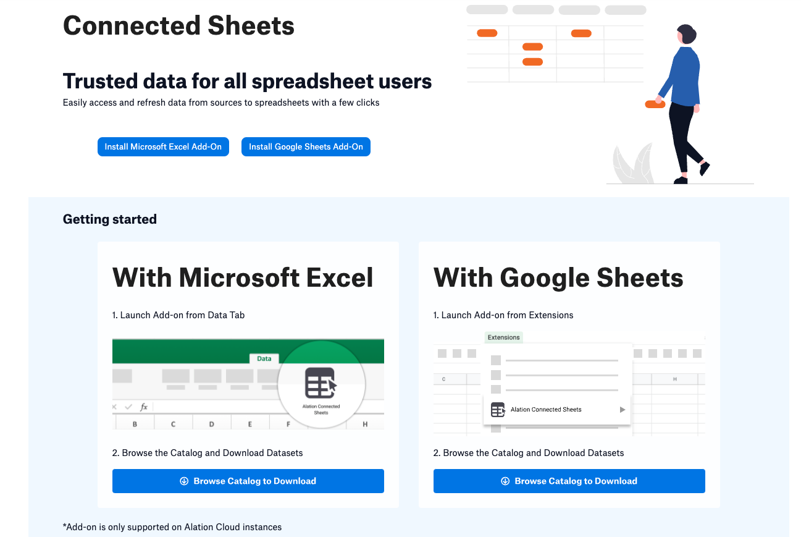If the Connected Sheets Hub Page is enabled, the landing page is also used as the hub for viewing and analyzing your Connected Sheets, and appears like the following:
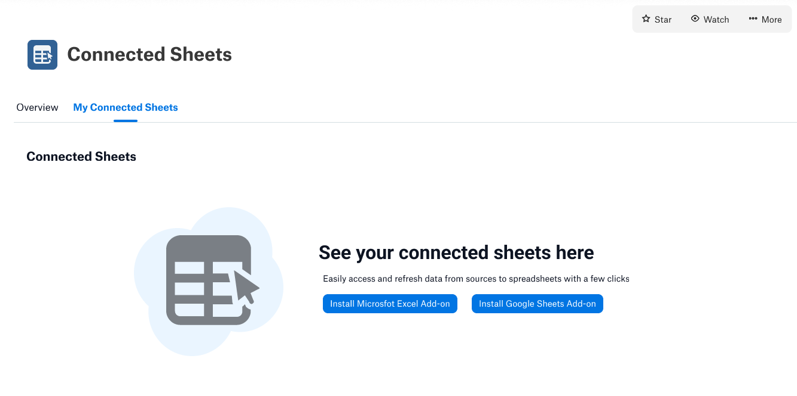Click Install Google Sheets Add-On to get the add-on. Google’s Workspace Marketplace web page opens in your browser.
Click Install. You may be asked to log in to Google and authorize Alation Connected Sheets to access your Google account.
Open a Google Sheets document and launch Alation Connected Sheets from Extensions:
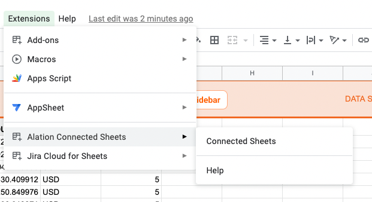
Getting Started with Excel¶
To get started with Alation Connected Sheets for Excel, do the following:
From the Apps menu in Alation, click Connected Sheets. By default, the Connected Sheets landing page appears as follows:
If the Connected Sheets Hub Page is enabled, the landing page is also used as the hub for viewing and analyzing your Connected Sheets, and appears like the following:
Click Install Microsoft Excel Add-On to get the add-in. Microsoft’s AppSource web page opens in your browser.
Click Get it now. You are taken to Microsoft 365 to complete the process; this may require a business login for Microsoft.
Click Open in Excel.
Excel and the add-in open and an Alation Connected Sheets icon is added to your Home ribbon:
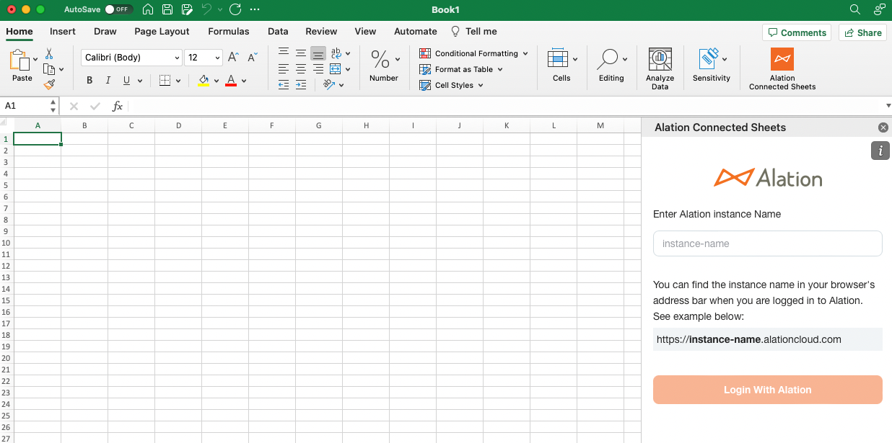
Log Into Alation Instance¶
Once Alation Connected Sheets is launched, you will need to log into your Alation Cloud Service instance. Enter the Alation instance name and then click Login With Alation. A new window appears. Use your Alation OAuth credentials to log in for access to the Alation catalog from Alation Connected Sheets:
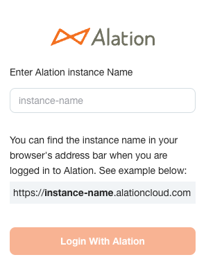The first time you log into Alation Connected Sheets for Google Sheets, you may be asked to log into your Google account to allow Alation to access your Google Sheets.
Download Directly Into Spreadsheets¶
Once you’ve signed into your Alation Cloud Service instance, click Browse Catalog to Download to view supported database instances:
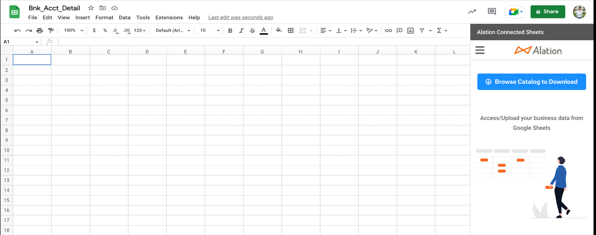The Catalog Browser dialog appears:
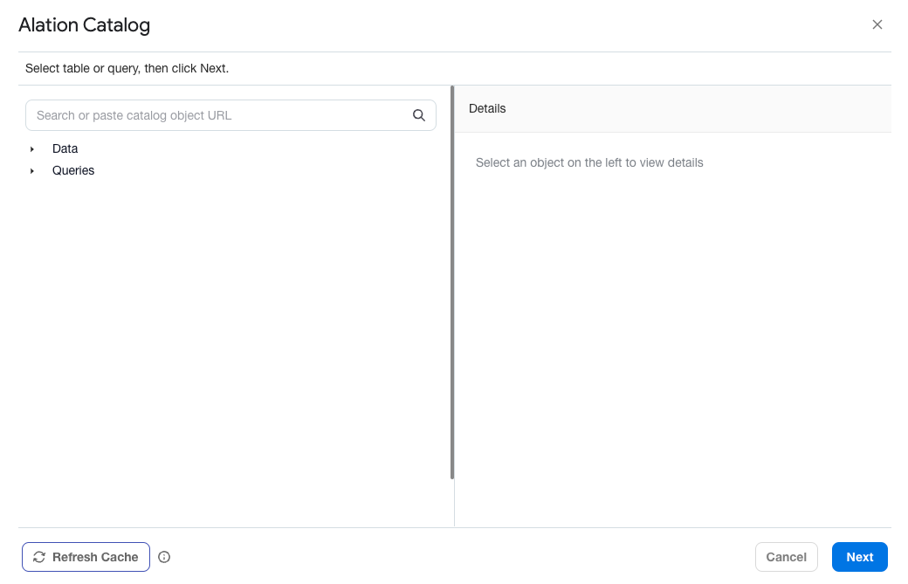You can navigate the catalog in three ways:
You can click through the object hierarchy; data sources and queries are available.
You can use search to find data objects.
Note
Search strings are applied on the Name, Title, and Description of the objects.
You can paste an object catalog URL into the search box.
As you click through objects, you can view metadata information from the catalog—including any curation information such as trust check flags showing Endorsements, Warnings, or Deprecations:
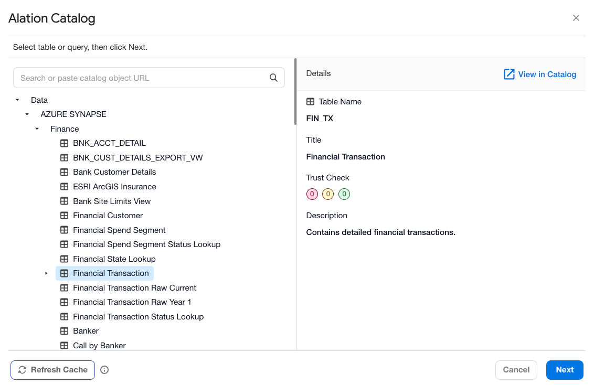When you have found a table or query you are interested in, click Next to connect to the relevant database. You are prompted to Save the Username and Password for the database:
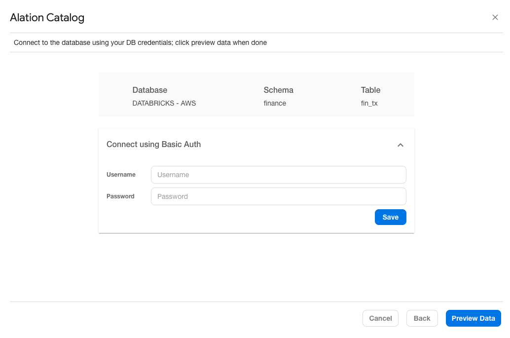You can preview data with filters or sort criteria before the download. You can also select the order of columns in the downloaded data. On query objects, you can apply filters only if the query supports customizable filter criteria:
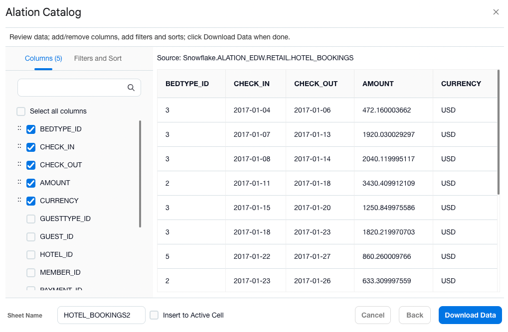You must provide a sheet name for the downloaded data set. The data set will be downloaded into a new sheet by default, or you can override this by selecting Insert into active cell.
When you are satisfied with your filters and sort criteria, click Download Data to complete the download:
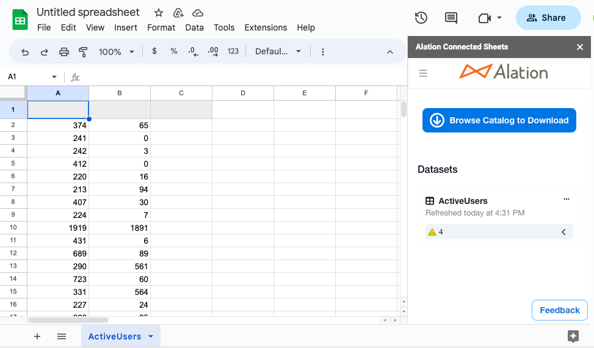Note
There is a limit of 10 million cells in a connected Google Sheet. If you attempt to download more data than will fit into 10 million cells, you will see an error message.
Manage Downloaded Data Configurations¶
Alation Connected Sheets provides a snapshot of all the download dataset configurations in a spreadsheet and provides easy manageability to:
Instantly refresh data
Schedule and manage auto-refresh for the data set
Edit data source credentials
View the data in the catalog
Edit a downloaded configuration
Delete a downloaded configuration
The list of datasets also shows any trust flags available:
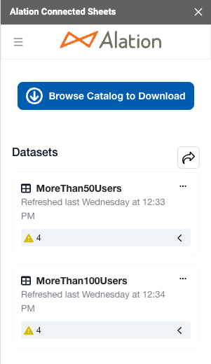You can expand the view to see pertinent information on the trust flags with a link to view all information in the catalog:
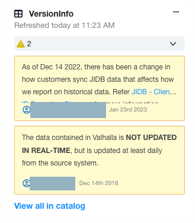Schedule Auto-refresh¶
Alation Connected Sheets makes it easy to refresh data and supports the following cadences:
Hourly: Every 2, 4, 6, 8, or 12 hours from a start time
Daily: Every day at a certain time (hour, minute) of a chosen time zone
Weekly: Every week, on one or more days at a particular time (hour, minute, and timezone)
Monthly: Every month on a specific day of month and time (hour, minute) of a chosen time zone
Status of the auto-refresh schedule will be reflected in the download sheet snapshot view. You can also opt for notifications for success, failure, or both:
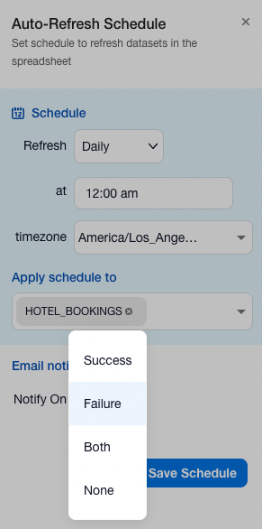Note
If using Alation Connected Sheets in Excel, auto-refresh is available only if the spreadsheet is stored in OneDrive or SharePoint.
Edit a Configuration¶
When you select Edit Configuration from the options menu, you are taken to the Data Preview page, where your options are determined by whether you initially chose a table or a query. If a table, you can change the set of columns selected, their order, filters applied, and sort order. If a query, you can change filters only if the query supports customizable filter criteria.
Make your changes, and then click Update. The configuration is updated to reflect your changes.
Using the Connected Sheets Hub¶
The Connected Sheets Hub gives catalog and server admins a convenient view of the Connected Sheets shared in your organization. To access the Hub, ensure that you are logged into Alation as a Catalog Admin or Server Admin and click Connected Sheets from the Apps menu. The Connected Sheets Hub appears:
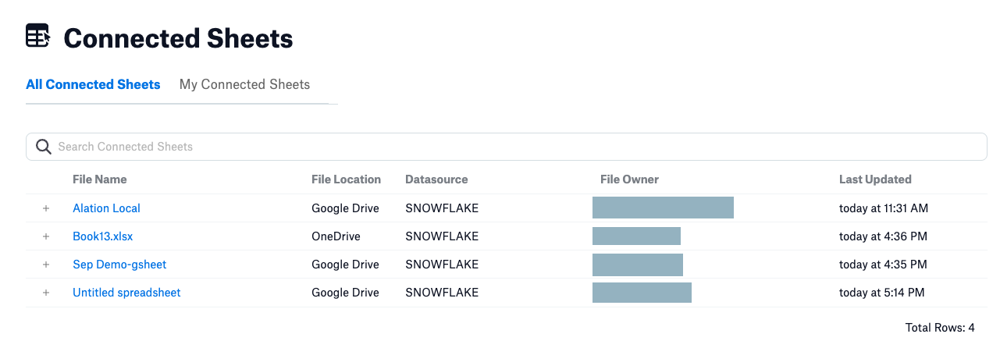There are two tabs—by default, the All Connected Sheets tab opens.
For each shared Connected Sheet, the Hub shows the file name, file location (Google Drive, OneDrive, or SharePoint), the associated data source, the file owner, and the time the file was last updated. Click the plus sign at the left of any sheet to see more information, including the dataset name and refresh schedule, if any:
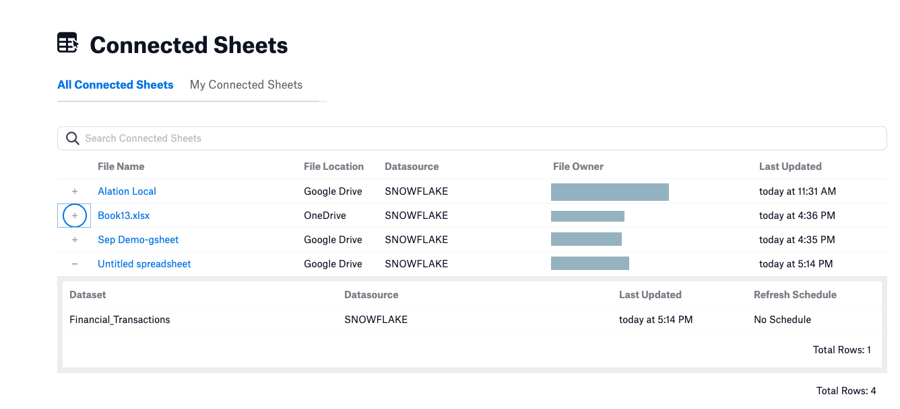To view only those Connected Sheets owned by you, select the My Connected Sheets tab:
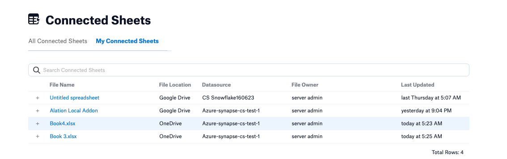While you can see all the shared Connected Sheets from the Hub, you can only open those that have been shared with you individually.